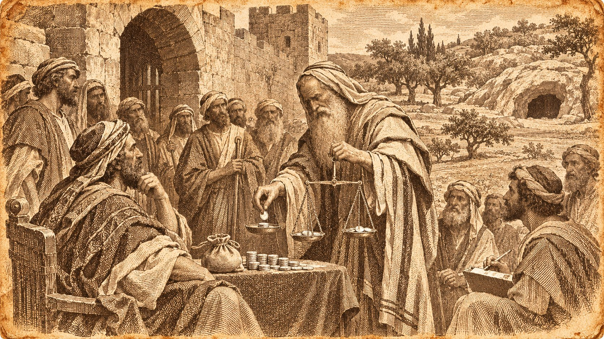
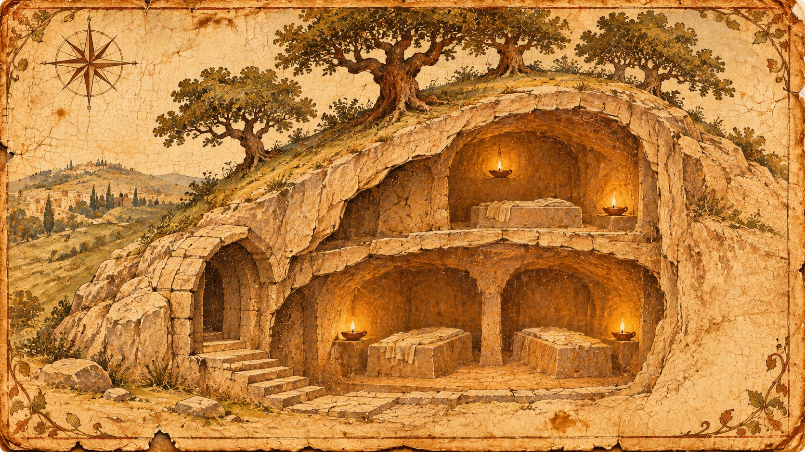

Abraham paid four hundred silver shekels for a cave where, tradition says, the first man and the first woman already lay. Our purpose is to bring out their remains, with every approval, and learn what they can teach us.
Our purposeSee the sourcesThe Adam and Eve Project has one aim. With the approval of the rabbis, the scientists and the authorities who guard this place, we want to bring out the remains that rest in the Cave of Machpelah, study them with the best tools of our time, and return them to their rest with honor.
We believe Abraham secured this cave so that they would be kept safe until a generation came that could understand them. We want to be that generation.
Measure the bones and rebuild the height and build of each body. The sages describe Adam as a figure of great stature. The bones can tell us.
Carbon dating gives the time of death. Bones and teeth show how old each person was, and how the body aged.
DNA shows ancestry. The chemistry of the teeth shows where a person grew up, what they ate and what water they drank.
The Torah names three generations here: Abraham, Isaac and Jacob, with their wives. DNA can show whether those buried together are father, son and grandson.
The Torah gives Adam 930 years. We want to compare their DNA with the genes known for long life, and look for what kept them strong: health, illness, wear and healing.
From a skull, science can rebuild a face. For the first time, people could look at the faces of their first parents.

Sarah has died. Abraham is offered the burial cave as a gift. He refuses. He insists on paying the full price, in public, in front of the whole town, so that nobody can ever question who owns it.
The Torah spends a whole chapter on this one deal. Why did this cave, and only this cave, matter so much?
The Midrash answers the question. Abraham did not pick the cave by chance. He had already been inside it, and he had seen who was resting there.
When the three guests came, Abraham ran to fetch a calf. It fled into the Cave of Machpelah. He followed it in and found Adam and Eve lying on their beds, as if asleep, with lamps burning above them and a sweet fragrance. From that day he longed to own the cave.
Hebron is called Kiryat Arba, “the city of four”, for the four couples buried there: Adam and Eve, Abraham and Sarah, Isaac and Rebecca, Jacob and Leah. “Machpelah” means doubled: a cave of two chambers.
The Zohar tells of Abraham meeting Adam and Eve in the cave when he came to bury Sarah, and of Abraham himself settling them back in their place. He becomes the guardian of humanity’s first parents.

Read plainly, the Torah describes a human being who lived more than nine centuries. The generations after him lived almost as long, and then lifespans fell.
If that is taken as it is written, it is the greatest open question in human biology. What was different about the first man?
Daniel speaks of things that are sealed until the right time. In its own setting the verse is about prophecy and redemption. We borrow its picture: some answers wait for the generation that can read them.
Ours is the first generation that can read a genome. For the first time, the question “what made Adam different?” could have an answer that is measured and not only imagined.
The Adam and Eve Project is a call to do this openly, with respect, and together. Nothing is to be done without full halachic approval and the agreement of everyone to whom this place is holy. The road is long: first the rabbis, then the scientists, then the keepers of the site. We are planting the seed now.
Our reading of the cave is new, so we offer it as a question. But the idea behind it is old. Again and again, the Torah and the sages tell of precious things that were put away and kept for a generation still to come.
“The field and the cave within it passed to Abraham as a burial holding.” He made it a known, owned and public place, so that it could never be lost.
Before the Temple fell, King Josiah had the Ark of the Covenant hidden away, so that it would be kept safe for a later day.
The light of the first day of creation was put away by God, and is kept for the righteous in the time to come.
“Moses took the bones of Joseph with him.” Joseph’s remains waited in Egypt for generations, and were carried out when the time came.
“Great are the works of the Lord, studied by all who delight in them.” Rambam teaches that looking closely at creation is a path to the love and awe of God.
Rabbis of our generation have allowed DNA from the dead to be read, so that fallen soldiers could be named and returned to their families. The law on moving a grave (Shulchan Aruch, Yoreh De’ah 363) has its stated exceptions.
We say this plainly. The Ark and the hidden light are holy objects, not graves. Joseph’s bones were moved at his own request. The soldiers were named for the sake of living families. None of these is a permission. They show a pattern, and from that pattern we ask: perhaps Abraham secured the first parents in one known place, for a generation that could learn from them.
The Talmud tells of Rabbi Bana’ah, who measured and marked burial caves so that nobody would walk over a grave by mistake. He entered the cave of Abraham. When he came to the cave of Adam, a voice from Heaven stopped him.
He answered that he needed to mark the cave. The voice replied:
Heaven refused the sage the sight of Adam, and in the same breath gave him the knowledge he had come for. His need was honored. The looking was refused. The knowledge was given another way. Rashbam adds that Rabbi Bana’ah was let in at all because he was a great man: entry was by permission, for a fitting person and a fitting purpose.
So we begin where the verse itself points: with what can be learned without looking and without touching.
This is an answer for knowing. It is not yet an answer for bones. Maharsha reads the voice as guarding the honor of God’s image even in death. Our hope is still to study the remains themselves. Whether that can ever be allowed, and on what terms, is the question we will bring to the rabbis. We do not claim the sources already say yes.
Those who can say no come first. Science should be shaped to fit the ruling, and not the other way round. The road may take many years. These are the steps, in order.
A movement that asks for trust has to start by telling the truth about itself.
We are gathering the names of rabbis, priests, pastors, scientists, doctors and friends who support this project. Each name is listed here, in public, for everyone to see. If you stand with it, add yours below.
The list is open. Be among the first names on it.
Tell us who you are. We confirm each name before it is shown, and you can ask to be removed at any time.
A question like this travels only if people carry it. Gifts will go to publishing the sources, translating them, and getting the word out.
You finish your gift on PayPal, by PayPal balance or by card. Gifts are received by Benny Goldstein, founder of The Adam and Eve Project, and are not tax-deductible.
A source we missed? An objection we have not answered? A question from Torah, science or law? Send it. The hardest questions help the most.